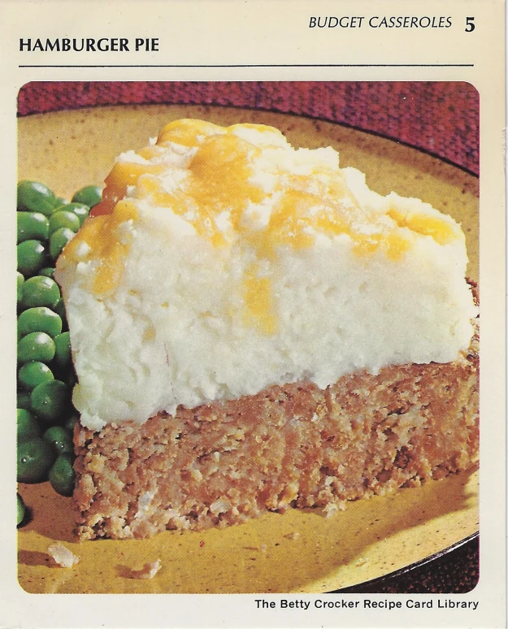

back
Burger Pie

Ingredients
- 1 pound ground beef
- Potato Buds instant puffs (enough for 8 servings)
- 1 egg
- 1 teaspoon salt
- 1/8 teaspoon pepper
- 1 tablespoon instant minced onion
- 3/4 cup catsup
- 1 cup milk
- 1/2 cup shredded sharp Cheddar cheese (2 ounces)
Preparation
- Heat oven to 350°.
- Mix meat, 1 1/3 cups of the instant puffs (dry), the egg, salt, pepper, onion, catsup and milk.
- Spread in ungreased pie pan, 9×1 1/2 inches.
- Bake uncovered 35 to 40 minutes.
- Prepare remaining instant puffs as directed on package for 4 servings.
- Top baked meat loaf with mashed potatoes; sprinkle with cheese.
- Bake 3 to 4 minutes longer or until cheese melts.